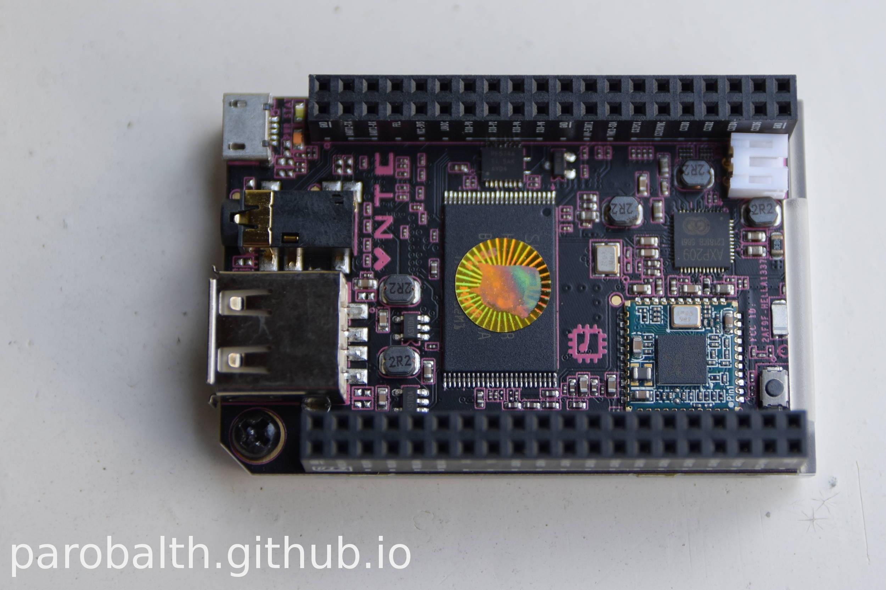

Warning — work in progress: This is a quick&dirty post about the first steps to connect NextThing C.h.i.p. via USB serial on a Debian Jessie machine. Consider it as a first draft — I am going to modify this post in the next few days and correct typos.
Introduction¶
I recieved my NextThing C.h.i.p. this week! It is a 9$ computer and comes already flashed with the C.h.i.p. OS based on Debian. I took some notes during my first steps with chip:
This is the official Documentation.
Headless via USB¶
I used this part of the official documentation as a starting point.
I like headless ssh-connections but you can’t reach your chip because wifi is not yet configured with your network.
I used a USB serial connection. Note that I use Debian Jessie (stable).
Connect your Chip with a standard USB-to-usb-micro-cable to the usb-port of your Computer/Laptop and run:
dmesg -w
Output will be similar to:
usb 1-2: New USB device found, idVendor=0525, idProduct=a4a7
usb 1-2: New USB device strings: Mfr=1, Product=2, SerialNumber=0
usb 1-2: Product: Gadget Serial v2.4
usb 1-2: Manufacturer: Linux 4.3.0-ntc with musb-hdrc
cdc_acm 1-2:2.0: This device cannot do calls on its own. It is not a modem.
cdc_acm 1-2:2.0: ttyACM0: USB ACM device
So your Chip is recognized as ‘ttyACM0‘. I had some permission problems because my user was not a member of the dialout group and had to connect with
sudo screen /dev/ttyACM0
If you add your user to the dialout group you can connect with regular user privileges.
Login as root with password chip or with username chip and password chip. User chip is already a member of the sudo group.
set up a wifi connection with nmtui:
nmtui
Now you can ssh into chip but you may want to change the root password and the password of user chip (passwd) first, create a normal user (adduser foo) and forbid root login via ssh (change settings in /etc/ssh/sshd_config). Add your user ‘foo’ to the sudo group with ‘adduser foo sudo‘ if you like.
Now you can ssh to your chip with (replace ‘foo’ with your username and ‘xxx.xxx.x.x’ with the IP adress of chip):
ssh foo@xxx.xxx.x.x
Let us have a look at the sources.list:
deb http://ftp.us.debian.org/debian/ jessie main contrib non-free
deb-src http://ftp.us.debian.org/debian/ jessie main contrib non-free
deb http://security.debian.org/ jessie/updates main contrib non-free
deb-src http://security.debian.org/ jessie/updates main contrib non-free
deb http://http.debian.net/debian jessie-backports main contrib non-free
deb-src http://http.debian.net/debian jessie-backports main contrib non-free
deb http://opensource.nextthing.co/chip/debian/repo jessie main
Looks pretty sane to me. Just standard debian stable repositories and one additional NextThing repository (probably for a custom kernel). Output of ‘uname -r‘ is 4.3.0-ntc. I have to admit that I am not entirely shure about ‘http.debian.net/debian’ (jessie-backports). I think that I am going to change that line.
Now let’s install aptitude and additional programs (I like aptitude):
apt-get update
apt-get install aptitude
Now you can install additional packages with aptitude (vim, mc, xterm, htop, screen, cmus, …)
If you have any questions, suggestions, thoughts and comments please feel free to email me.
License of this blog post:

This work is licensed under a Creative Commons Attribution-ShareAlike 4.0 International License.